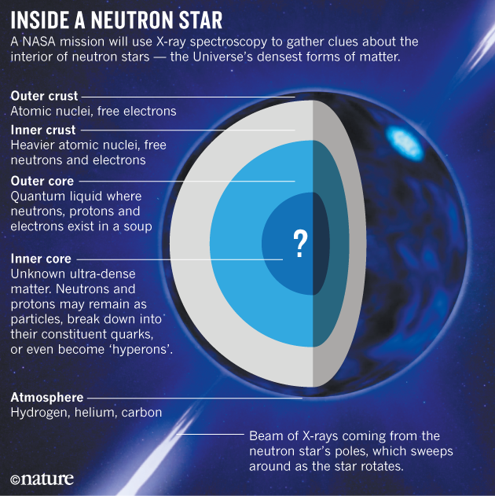

Introduction
Imagine a cosmic phenomenon so incredible that it challenges the boundaries of our understanding of space and physics. Deep within the heart of a massive star, a remarkable transformation takes place when its nuclear fuel runs out. This celestial event gives birth to one of the most fascinating and enigmatic objects in the universe — neutron stars. Neutron stars are like the stellar skeletons left behind after a supernova, and they possess mind-boggling properties that boggle the human imagination.
What Is a Neutron Star?
Neutron stars are the remnants of massive stars that have exhausted their nuclear fuel and undergone a cataclysmic explosion known as a supernova. When a star several times more massive than our Sun runs out of fuel, its core collapses under the force of gravity, packing an astonishing amount of mass into a tiny volume. Imagine compressing the entire Earth into a sugar cube — that is the level of density we are talking about. In fact, neutron stars are so dense that a teaspoon of their material would weigh as much as a mountain on Earth.
These exotic objects are composed almost entirely of neutrons, the subatomic particles found in the nucleus of an atom. Under intense gravitational pressure, electrons are forced to combine with protons, creating neutrons and forming a dense core. Neutron stars are incredibly small compared to their parent stars, typically only about 10 to 20 kilometers (6 to 12 miles) in diameter. Despite their small size, they possess immense gravitational forces capable of bending and distorting the very fabric of spacetime around them.
Rapid Rotation and Pulsars
One of the most remarkable characteristics of neutron stars is their rapid rotation. When the original star collapses, conservation of angular momentum causes the neutron star to spin at incredibly high speeds. Some neutron stars can complete hundreds of rotations per second. This rapid spinning generates powerful magnetic fields that are trillions of times stronger than Earth's magnetic field.
These magnetic fields can unleash energetic bursts of radiation, observed as pulsars — beams of electromagnetic radiation that appear to pulse as they sweep across our line of sight, much like a cosmic lighthouse. Pulsars are so precise in their timing that astronomers use them as natural clocks to test the predictions of general relativity.

Key Properties at a Glance
- Extreme density: A teaspoon of neutron star material weighs roughly a billion tons — more than all of humanity combined.
- Tiny diameter: Despite containing more mass than the Sun, a neutron star is typically only 10–20 km across.
- Intense gravity: Surface gravity is roughly 200 billion times that of Earth, enough to warp spacetime around them.
- Staggering rotation: Some millisecond pulsars spin over 700 times per second, making them the fastest-rotating objects known.
- Colossal magnetic fields: The strongest magnetars have fields trillions of times more powerful than any magnet on Earth.
Why Neutron Stars Matter
Neutron stars sit at the frontier of physics. They are natural laboratories for studying matter under conditions far beyond what any experiment on Earth could replicate. The 2017 detection of gravitational waves from two merging neutron stars — accompanied by a gamma-ray burst observed simultaneously — opened an entirely new era of multi-messenger astronomy, confirming that collisions between neutron stars are responsible for forging heavy elements like gold and platinum that exist throughout the universe.
Every piece of gold jewelry, every platinum catalyst, and every iodine atom in your body was likely forged in the violent merger of two neutron stars billions of years ago. In studying these objects, we are not just exploring the extremes of space — we are tracing the origins of the matter that makes up our world.